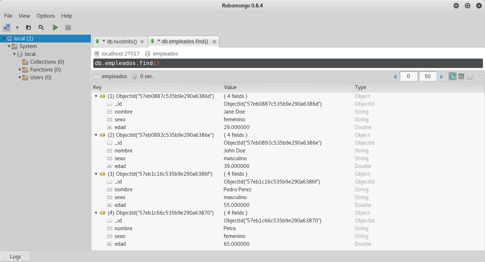
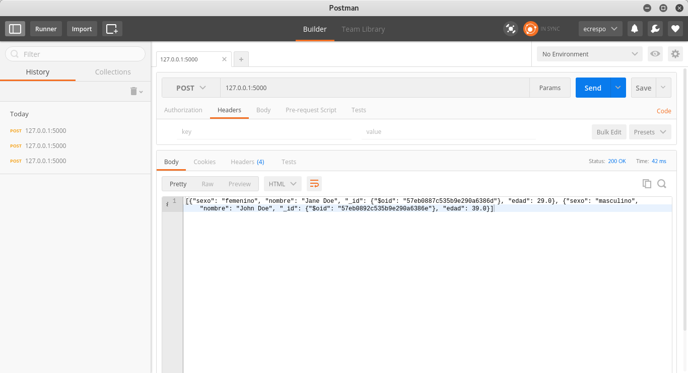

Consulta a MongoDB desde Flask (parte 1)
Posted on mar 27 septiembre 2016 in Tutorial Python • 3 min read
En este artículo se usará Docker para construir la imagen que contiene el script en Flask con sus dependencias, se usará docker-compose.yml para asociar dicha imagen como contenedor con un contenedor de mongoDB.
Para revisar los artículos relacionados a este artículo pueden ver:
Se tiene una colección empleados en una base de datos empleados con los siguientes datos:
[{"_id": {"$oid": "57eb0887c535b9e290a6386d"}, "nombre": "Jane Doe", "sexo": "femenino", "edad": 29.0}, {"_id": {"$oid": "57eb0892c535b9e290a6386e"}, "nombre": "John Doe", "sexo": "masculino", "edad": 39.0}, {"_id": {"$oid": "57eb1c16c535b9e290a6386f"}, "nombre": "Pedro Perez", "sexo": "masculino", "edad": 55.0}, {"_id": {"$oid": "57eb1c66c535b9e290a63870"}, "nombre": "Petra", "sexo": "femenino", "edad": 65.0}]
Estructura de archivos y directorios
La estructura de archivos y directorios del proyecto del artículo es la siguiente:
tutorial-flask
├── app
│ └── run.py
├── docker-compose.yml
├── Dockerfile
├── README.md
└── tmp
Archivo Dockerfile
El archivo Dockerfile usa de sistema base Python, e instalará las siguientes dependencias:
- Actualización de pip
- pymongo
- Flask
- Flask-PyMongo
- Además expone el puerto 5000 y ejecuta el script
run.py.
A continuación el contenido del archivo Dockerfile:
FROM python
WORKDIR /code/
RUN pip3 install --upgrade pip
RUN pip3 install pymongo
RUN pip3 install Flask
RUN pip3 install Flask-PyMongo
EXPOSE 5000
ADD ./app/* /code/
COPY ./app/* /code/
CMD python run.py
Archivo docker-compose.yml
El archivo docker-compose.yml define la construcción de la imagen Docker a partir del archivo Dockerfile, el puerto a exponer, el volumen a exponer y se enlaza con el contenedor mongo, el cual usa la imagen de mongo, expone el puerto 27017, y por último expone el volumen.
A continuación el contenido del archivo:
flask-mongo:
build: .
ports:
- "5000:5000"
volumes:
- "./app/:/code"
links:
- mongo
mongo:
image: mongo
ports:
- "27017:27017"
volumes:
- "/srv/data/db:/data/db:rw"
Si se quiere que la base de datos mongodb sea pública se expone los puertos, si no, entonces no se define los puertos. Para el caso de manejar persistencia de datos en la base de datos si es necesario definir el volumen.
Script run.py
Este script se muestra a continuación:
#!/usr/bin/env python
#Se importa Flask
from flask import Flask
#Se importa PyMongo
from flask_pymongo import PyMongo
#Se importa dumps de bson.json_util
from bson.json_util import dumps
#Se crea la instancia Flask
app = Flask(__name__)
#Se configura el acceso a la base de datos mongodb
app.config['MONGO_DBNAME'] = 'empleados'
app.config['MONGO_URI'] = 'mongodb://mongo:27017/empleados'
#Se asocia la configuración pasando la app
mongo = PyMongo(app)
#Se define la ruta raiz con metodo POST
@app.route('/',methods=['POST'])
def index():
#Se realiza la conexion a la coleccion empleados
empleados = mongo.db.empleados
#Se hace la consulta y se devuelve en formato json_util
resultados = empleados.find()
return dumps(resultados)
if __name__ == "__main__":
#Se corre la aplicacion en modo debug
app.run(host="0.0.0.0",debug=True)
Crear la imagen Docker y ejecutar los contenedores
Para crear la imagen Docker se ejecuta:
docker-compose build
Para ejecutar los dos contenedores se ejecuta:
docker-compose up
A continuación se muestran los documentos de la colección desde robomongo:

Para realizar la consulta se usará postman (una aplicación para google chrome), a continuación se muestra la imagen del resultado de la consulta:

Al consultar vía POST a 127.0.0.1 puerto 5000, se devuelve el json con todos los empleados que se tienen en la base de datos mongodb.
El código fuente de este artículo lo pueden ver en la rama mongo1 en gitlab.
¡Haz tu donativo! Si te gustó el artículo puedes realizar un donativo con Bitcoin (BTC) usando la billetera digital de tu preferencia a la siguiente dirección: 17MtNybhdkA9GV3UNS6BTwPcuhjXoPrSzV
O Escaneando el código QR desde la billetera: